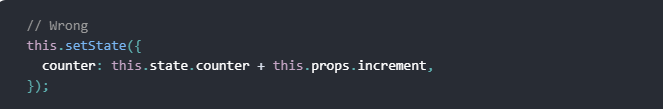
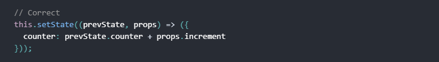
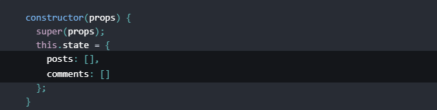
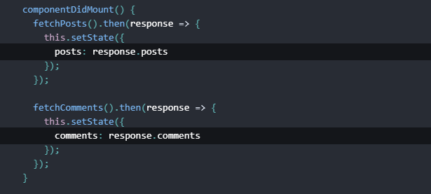
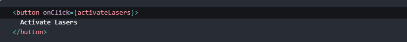
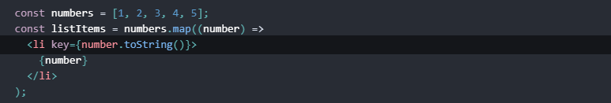

React
A JavaScript library for building user interfaces
- Declarative
- Component-Based
- Learn Once, Write Anywhere
React is MAINLY THE VIEW LAYER.
Virtual DOM
Elements
- Elements are the smallest building blocks of React apps
- An element describes what you want to see on the screen
- it represents the UI at a certain point in time.
Unlike browser DOM elements, React elements are plain objects , and are cheap to create
Immutable. Once you create an element, you can’t change its children or attributes.
Introducing JSX
JSX may remind you of a template language, but it comes with the full power of JavaScript.
Component
Components let you split the UI into independent, reusable pieces, and think about each piece in isolation.
Conceptually, components are like JavaScript functions. They accept arbitrary inputs (called “props”) and return React elements describing what should appear on the screen.
All React components must act like pure functions with respect to their props.
Component types
React has a few different kinds of components
- Functional/Stateless
- Class Components/Stateful
Props
- Object argument with data
- Read-Only
State
State is similar to props, but it is private and fully controlled by the component.
A feature available only to classes.
There are three things you should know about setState().
Do Not Modify State Directly


State Updates May Be Asynchronous
React may batch multiple setState() calls into a single update for performance.  State Updates are Merged
  Then you can update them independently with separate setState() callsState is often called local or encapsulated. It is not accessible to any component other than the one that owns and sets it.
Handling Events
Handling events with React elements is very similar to handling events on DOM elements. There are some syntactic differences
- React events are named using camelCase, rather than lowercase.
- With JSX you pass a function as the event handler, rather than a string.
React way
Lifecycle hooks.
Mounting
constructor()componentWillMount()
render()
componentDidMount()
Updating
componentWillReceiveProps(nextProps)shouldComponentUpdate(nextProps, nextState)
componentWillUpdate(nextProps,nextState)
render()
componentDidUpdate(prevProps,prevState)
Unmounting
componentWillUnmount()Lists and Keys
Keys help React identify which items have changed, are added, or are removed. Keys should be given to the elements inside the array to give the elements a stable identity
Keys Must Only Be Unique Among Siblings
Refs and the DOM
When to Use Refs
- Managing focus, text selection, or media playback.
- Triggering imperative animations.
- Integrating with third-party DOM libraries.
Avoid using refs for anything that can be done declaratively.
For example, instead of exposing open() and close() methods on a Dialog component, pass an isOpen prop to it.Context
In some cases, you want to pass data through the component tree without having to pass the props down manually at every level. You can do this directly in React with the powerful “context” API.
Why Not To Use Context
If you want your application to be stable, don’t use context. It is an experimental API and it is likely to break in future releases of React.
- Redux
- Mobx